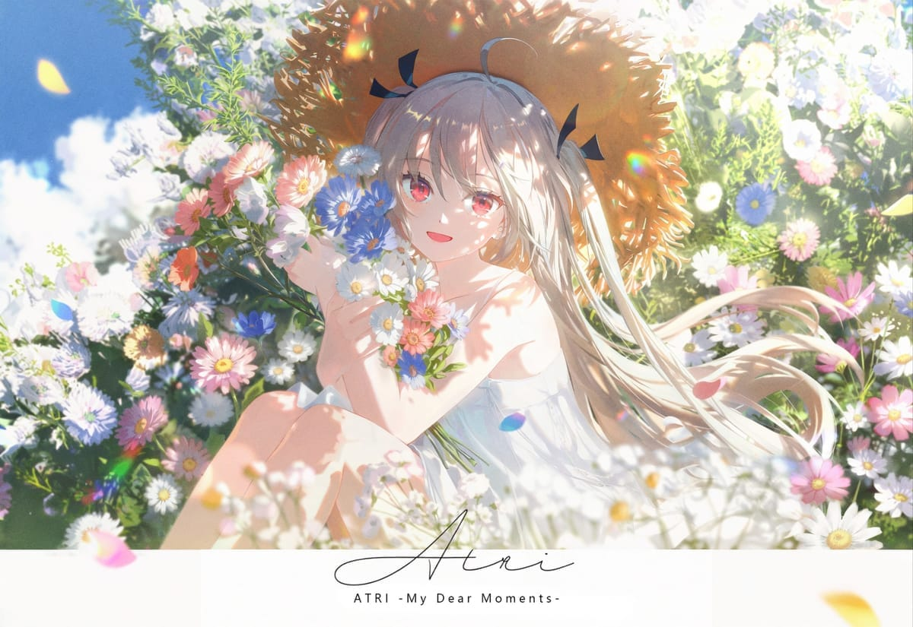
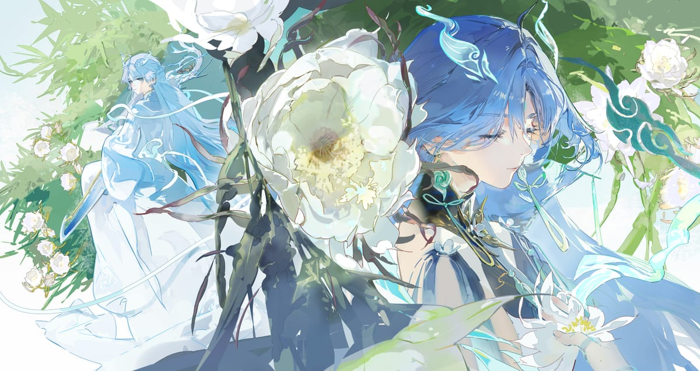
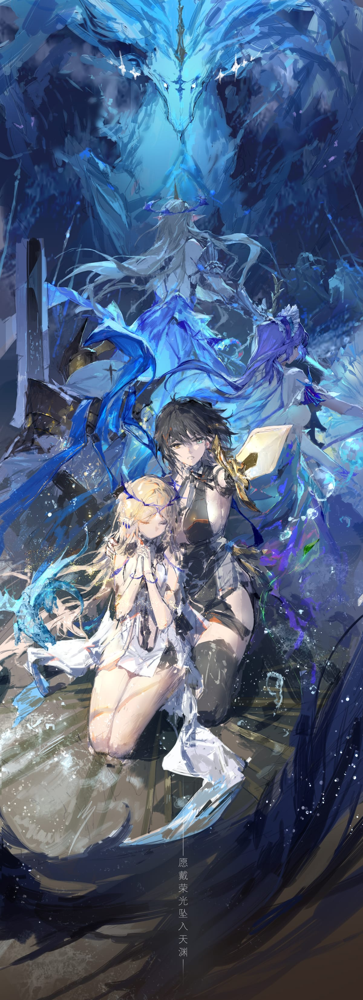

晴天
小站
首页
博客
书签
收藏
关于我
联系我
日志
COLLECTION
美好的瞬间，值得被珍藏

01
Moment No.01
02
Moment No.02

03
Moment No.03

04
Moment No.04
The earth has music for those who listen.
— William Shakespeare
站点日志
--
--
⏮
▶
⏭
↻
0:00
0:00
🔊
↑